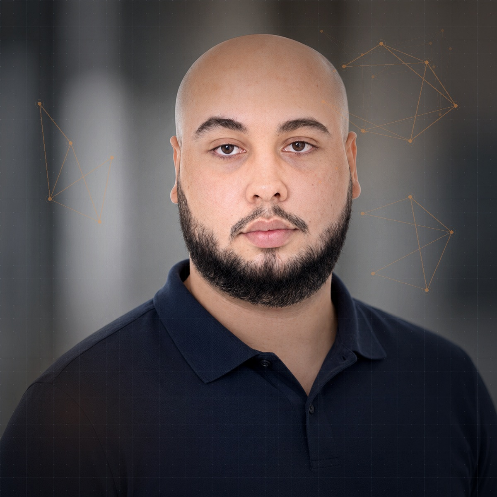
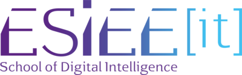

Ingénierie endpoint
Conception et opération de parcs d'endpoints à l'échelle entreprise — déploiement zero-touch, patching, conformité et monitoring sur des milliers d'appareils.
Profil : Ingénieur SCCM / Intune
Je déploie, sécurise et automatise des parcs d'endpoints à l'échelle entreprise — en alternance chez SYSTRA, parcours d'ingénieur Réseaux & Sécurité à ESIEE-IT.

Je ne déploie pas juste des outils : je conçois des environnements IT qui passent à l'échelle, se laissent automatiser et restent défendables sous pression.
Parcs endpoint, AD/Azure AD et tenants Intune dimensionnés pour grandir sans casser.
PowerShell, Graph API, scripts de conformité — moins de mains sur les postes, plus de signal sur les exceptions.
Agents et modèles de langage branchés au triage d'incidents, à l'analyse de logs et à la rédaction de remédiations.
Durcissement AD, Sentinel One, Fortinet, conformité CIS — un parc qui résiste autant qu'il sert.
n8n / Make / scripts maison : connecter les outils ITSM, Graph, Slack, mail et données métier.
Ansible, YAML, versionné dans Git — l'infrastructure devient déclarative, reproductible, auditable.
Professionnel IT dédié avec une expertise dans la gestion et la sécurisation d'infrastructures réseaux, l'automatisation des processus via scripting et l'optimisation des performances systèmes.
Actuellement en alternance chez SYSTRA en tant qu'ingénieur SCCM/Intune, je gère le déploiement et le monitoring de plus de 10 000 appareils. En parallèle, je finalise mon diplôme d'ingénieur Réseaux & Sécurité à ESIEE-IT (promotion 2026).
Reconnu pour mon adaptabilité, mon esprit d'équipe et ma communication claire, j'excelle dans la résolution de challenges complexes tout en assurant des opérations IT fiables et efficaces.
Conception et opération de parcs d'endpoints à l'échelle entreprise — déploiement zero-touch, patching, conformité et monitoring sur des milliers d'appareils.
Segmentation réseau, accès distants sécurisés et supervision de menaces — appliqués en labs et en environnement entreprise.
Industrialisation des tâches IT par scripting et intégration de l'IA appliquée à l'infrastructure — moins d'opérations manuelles, plus de valeur métier.
J'expérimente et déploie des agents, des workflows et des modèles de langage pour faire ce qu'aucun runbook ne devrait avoir à décrire à la main — du triage d'incidents au scripting assisté.
Assistants connectés à Graph API, SCCM, Intune et aux journaux des postes — capables d'analyser un incident, de proposer une remédiation PowerShell et de l'exécuter sous contrôle humain.
n8n, Make, scripts maison : pipelines reliant ITSM, Graph, Slack, Notion et bases métiers — les outils se parlent, les humains n'ont plus à recopier.
Corrélation KB / CVE / parc, génération de scripts d'audit, suggestion de policies Intune — l'IA ne remplace pas l'administrateur, elle compresse le temps de raisonnement.
Conformité, onboarding, remédiations, inventaire matériel — chaînés en PowerShell + Graph, paramétrés par tenant Intune, instrumentés pour le monitoring.
SYSTRA — Alternance
AGSI
SYSTRA

ESIEE-IT, PontoiseLe CNAM / ESIEE-IT, Pontoise
ENSITECH, Cergy